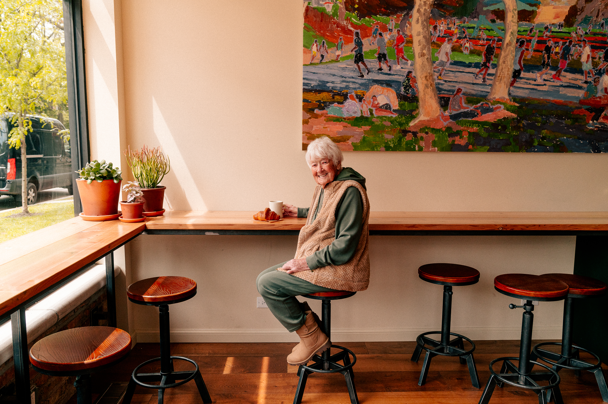

Our Story
This is Dot. She’s our grandma, and she turned 100 in 2025. There isn’t enough space or time here to explain all the reasons we named a cafe after her, but we think this photo says a lot.
Dot loves coffee and good company, and we’ve spent countless hours enjoying coffee and conversation with her.
With Dot’s, we wanted to create a space where friends and family can gather to enjoy a cup of coffee, to be together, to enjoy the simple pleasures that add up to a life well lived.
Cheers,
Michael and Rob
